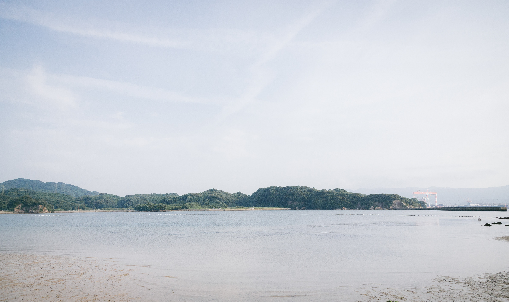
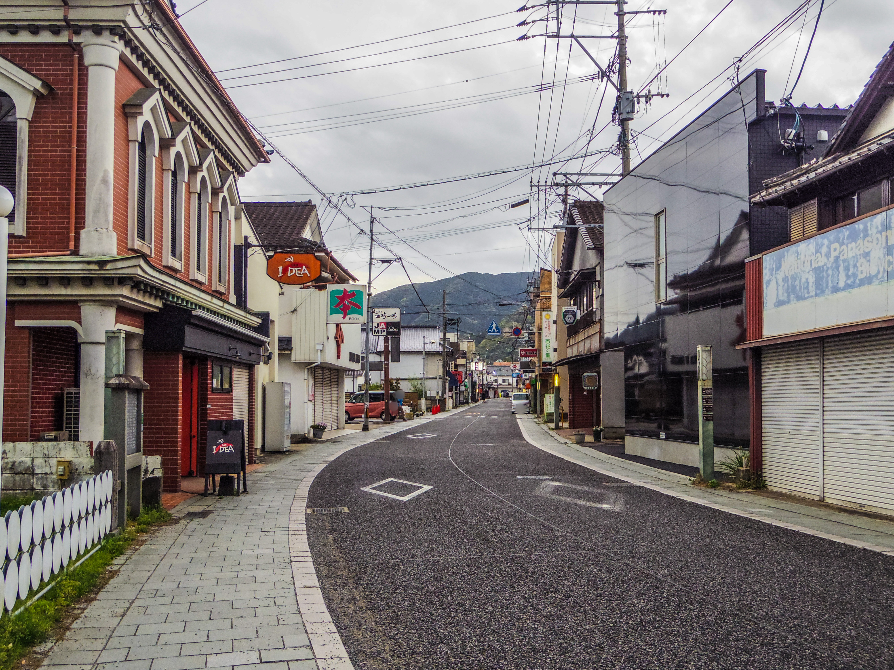
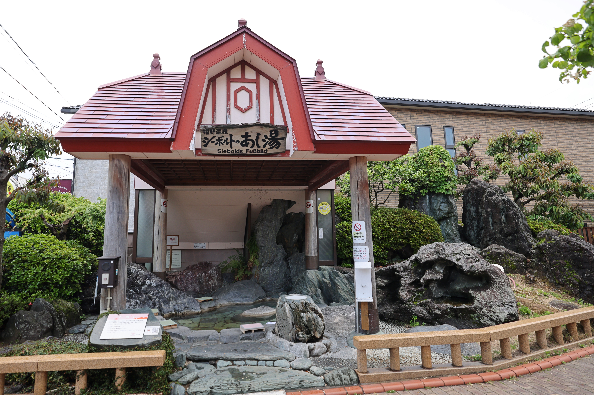
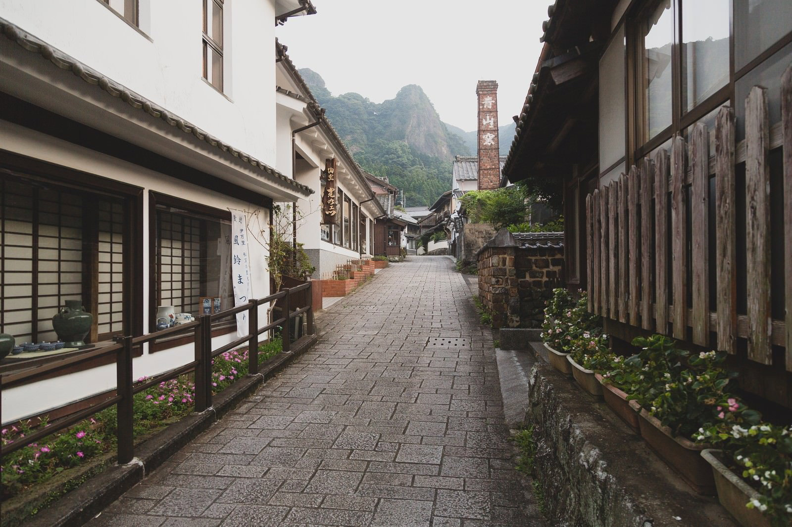
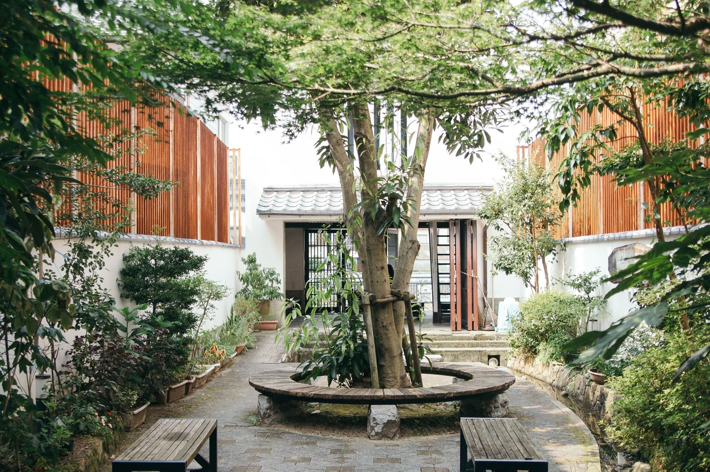

佐賀を旅する
佐賀の魅力を見つけに行こう。
もっとみるまだ知らない佐賀を、見つけに行こう。
旅を始める佐賀の魅力を見つけに行こう。
もっとみる佐賀のことをもっと知る。
aboutをみる
海辺でゆっくり過ごす、佐賀の小さな旅。

佐賀の風景をゆっくり楽しむ。


透き通るような美しさと、コリコリした食感が楽しめる呼子の名物。

きめ細やかな肉質と、とろけるような味わいが魅力の佐賀を代表するブランド牛。


レトロな洋風建築が印象的な、嬉野温泉を代表する公衆浴場。

温泉宿やお店が並ぶ、ゆったりとした時間が流れる嬉野の温泉街。



伊万里川に架かる歴史ある橋。周辺の景色とともに、伊万里の街b並みを楽しめる場所。

佐賀の自然やグルメ、温泉、街並みなど、 小さな旅で出会える魅力を紹介するサイトです。
aboutをみる